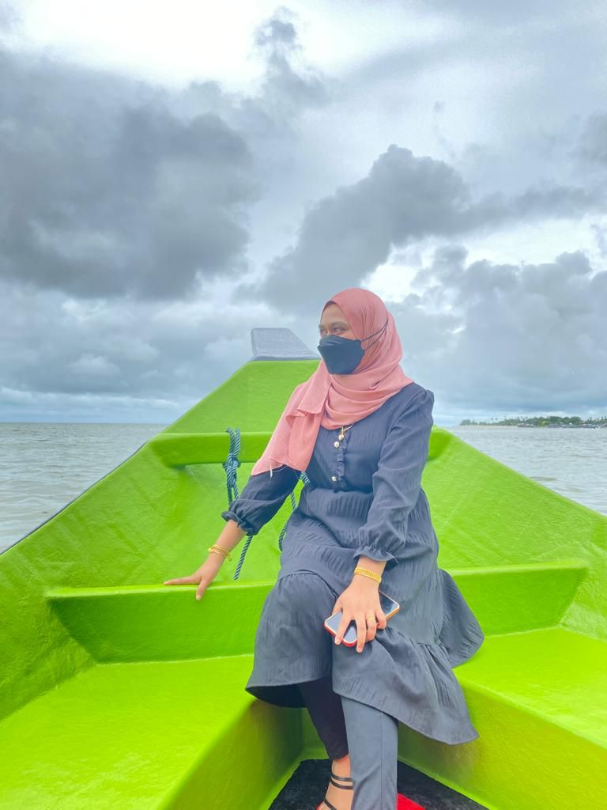
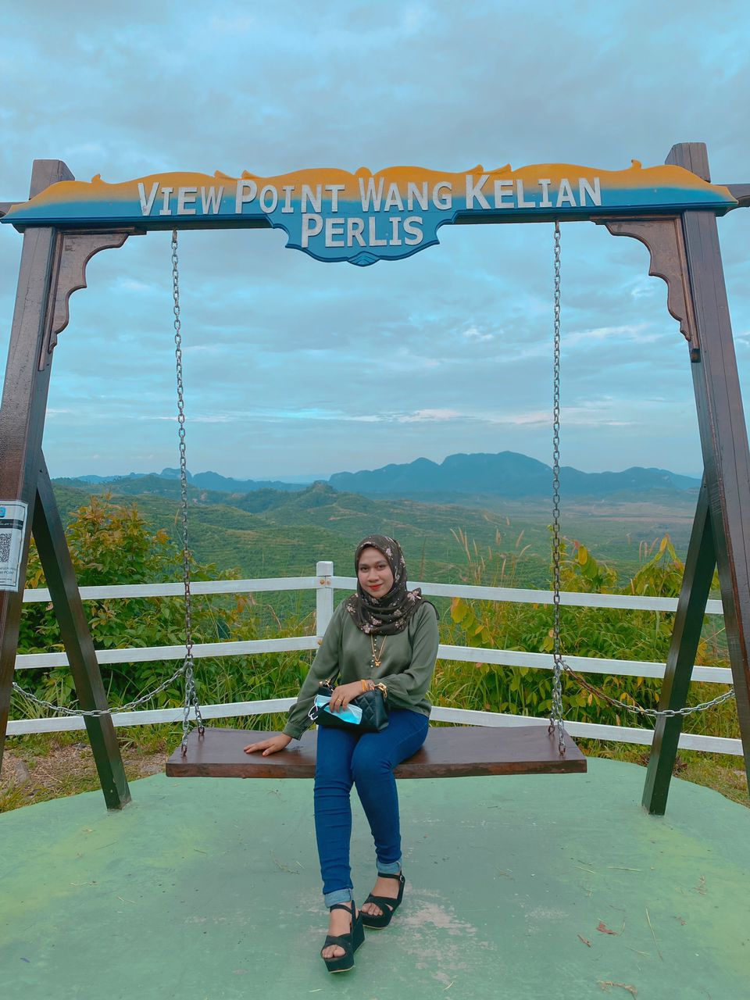
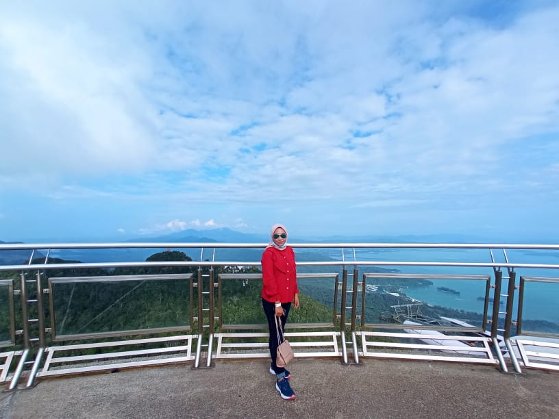
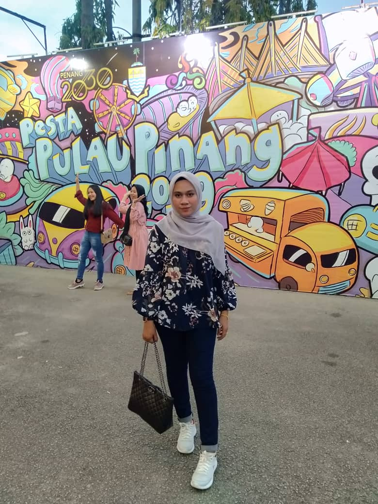

Having a hobby is a great way to reduce the amount of stress you feel-Craig W.Baird-😍
A LITTLE FLASHBACK

Travel at Pantai Merdeka

Travel at Wang Kelian
Travelling is one of those few activities that has a kind of reset button in our lives. You go away for a few days or weeks and come back fresh and ready to take on challenges of life head on.
Travelling has become easier due to advancement in technology and transportation. Earlier people use to travel by road or sea and it takes many days to reach from one place to another, however, now the scenario has changed and people travel to far off places within hours and minutes-thanks to well-built roads and aeroplanes.
People travel for different purposes, some travel for the sake of education while others travel to relax and enjoy. Many people take a break from their hectic schedule and go for a vacation, this makes them feel delightful and also help them to invigorate.
Traveling has always been a mandatory part of my life at least once a year. I will spend and my money at least a year as a reward to myself who has sacrificed with workload and so on.I am a person who loves places that are viral and visited. For me traveling is one of the ways for me to relieve my stress. I love traveling in viral places as well as quiet places.
A LITTLE FLASHBACK

Travel at Langkawi

Travel at Pinang